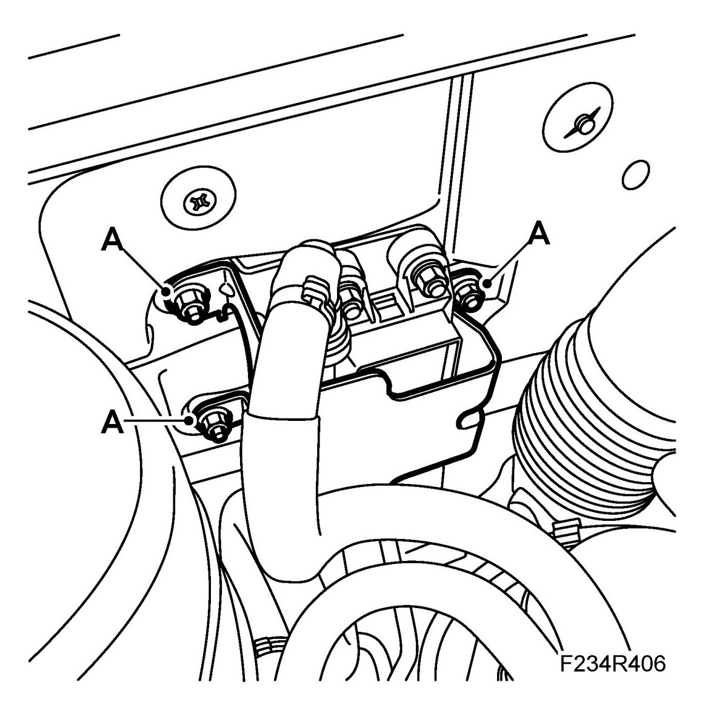
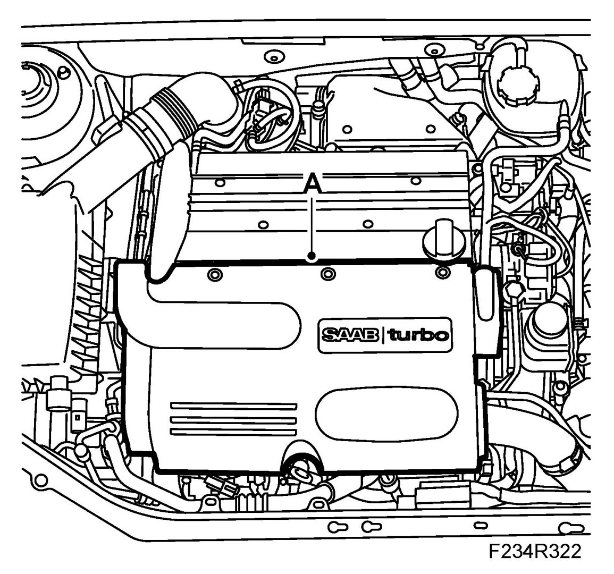
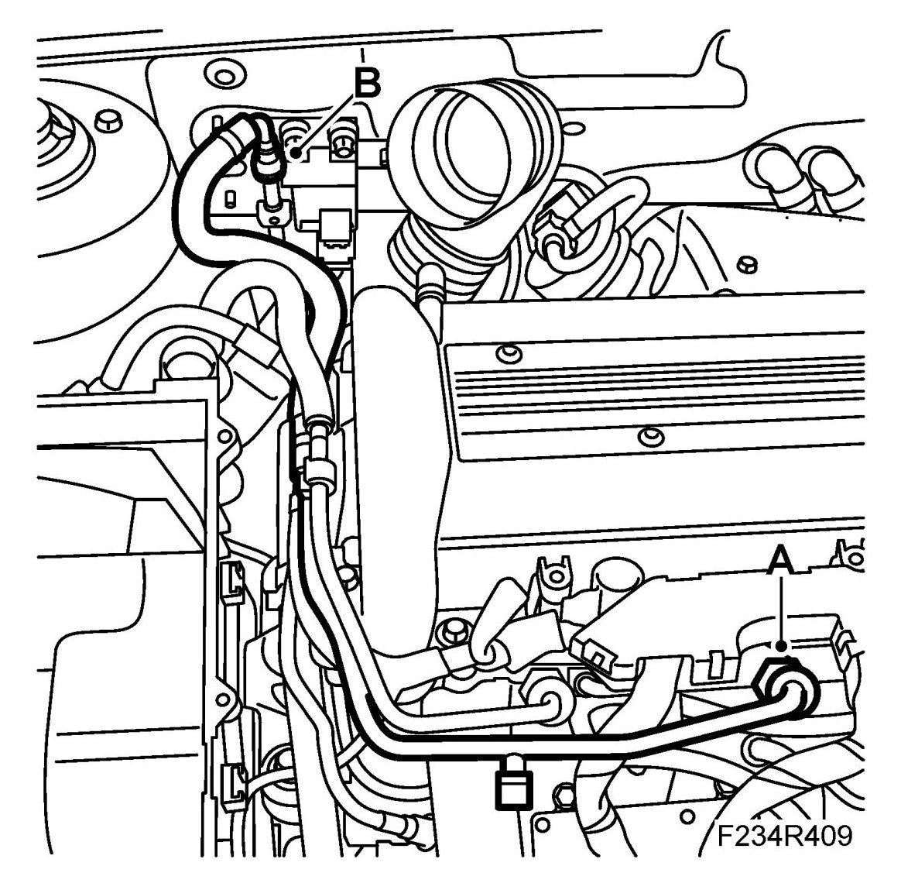
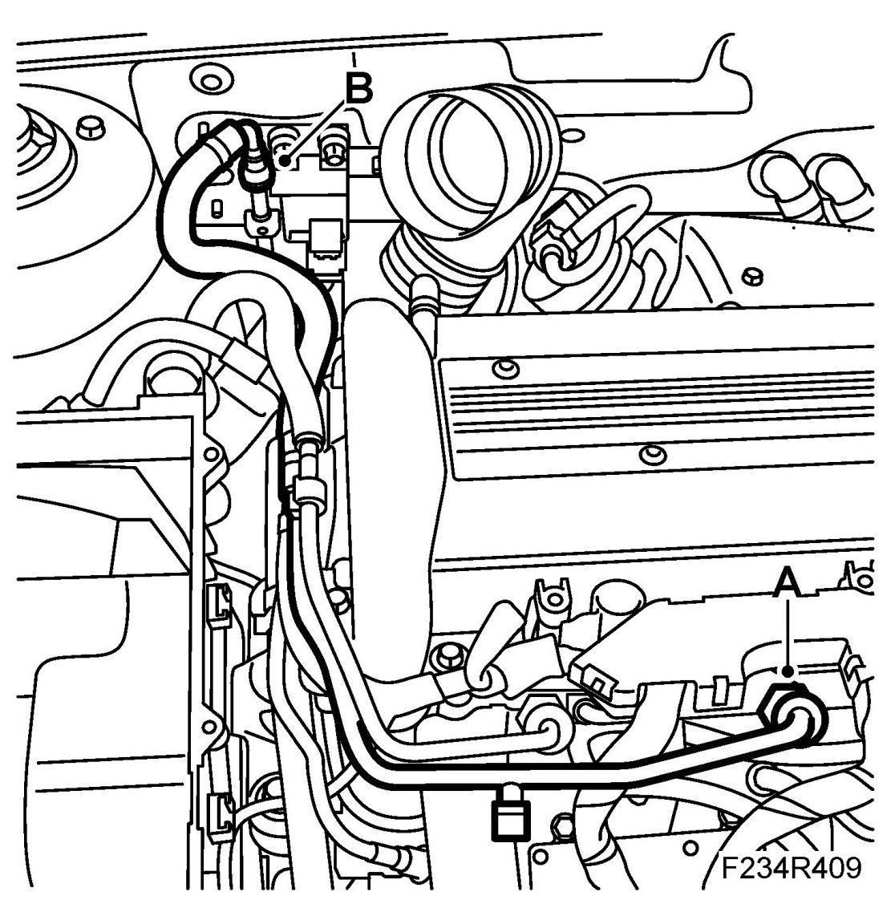
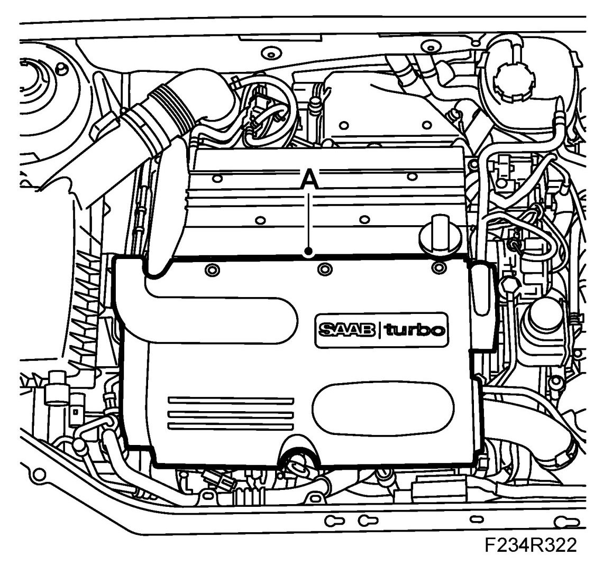

Flexible Fuel Sensor: Service and Repair
Fuel Pipe, Ethanol Sensor - Nozzle Pipe
WARNING:
Removal of the fuel filter involves partial dismantling of the car's fuel system. The following points must therefore be observed in connection with this work:
- Make sure a class BE fire extinguisher is close to hand. Consider the risk of sparking, e.g. when breaking circuits, short-circuits etc.
- Absolutely No Smoking.
- Ensure that there is a good exchange of air. If approved ventilation for the extraction of fuel fumes is available, this should be used.
- Wear protective gloves. Prolonged exposure of the hands to fuel can cause irritation to the skin.
- Wear protective goggles.
To remove
1. Remove Air filter.
2. Remove the cover over the sensor (A).

3. Remove the upper engine cover (A).

4. Remove the supply pipe from the fuel rail (A). Use the holding tool so that the lower connection is loosened at the fuel supply pipe. Detach the pipe from the fixings on the camshaft cover.

5. Remove the fuel line (B). Use 83 95 261 Fuel line tool.
To fit
1. Fit the fuel supply pipe to the fuel rail (A). Fit a new seal. Affix the pipes to the bracket at the camshaft cover.

2. Fit the fuel line (B) to the sensor.
3. Fit the cover over the sensor (A).
4. Fit Air filter.
5. Connect an exhaust extractor. Start the engine and check for fuel leaks.
6. Switch off the engine.
7. Fit the upper engine cover (A).
